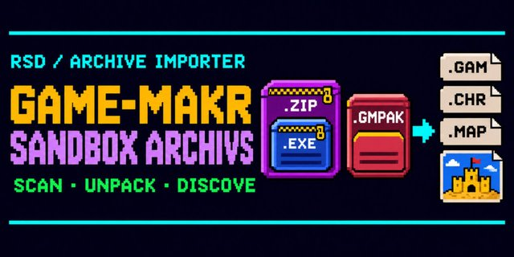

Game-Maker Sandbox Archives
Find and unpack games in ZIPs, EXEs and packs

The Game-Maker: Sandbox Edition importer as its own npm package: scan ZIPs, nested archives, game packs and player EXEs, choose the games, and unpack them in a browser or Node.js.
Executive summary
Why it exists
Old Game-Maker games turn up inside ZIPs, ZIPs inside ZIPs, and customized player executables. The importer that handles them lived inside the Game-Maker: Sandbox Edition app. I split it into its own public repository and npm package, keeping its git history.
Outcome
Published on npmjs and GitHub Packages, with its own tests and releases. It is the same importer the Game-Maker: Sandbox Edition site uses.
My role
Maintainer. The split was done by AI agents under my direction, as with the rest of Game-Maker: Sandbox Edition.
Technical overview
How it works
A scanner reads game headers and archive directories first, so a person can choose games before any files are read; a report explains bad, empty and loose files. unpackGame and unpackGames return the chosen games. ZIPs are searched up to three levels deep, with limits on entries and bytes. A ZIP writer, a game-pack format with an incremental reader, and player-EXE identification (by build, size, MD5 and its About text) are included. Compression uses the browser's own streams, so the only runtime dependency is the engine package.
Hard parts
Handling untrusted archives safely: executables are inspected as data and never run, and every archive and returned game has an entry and size limit.